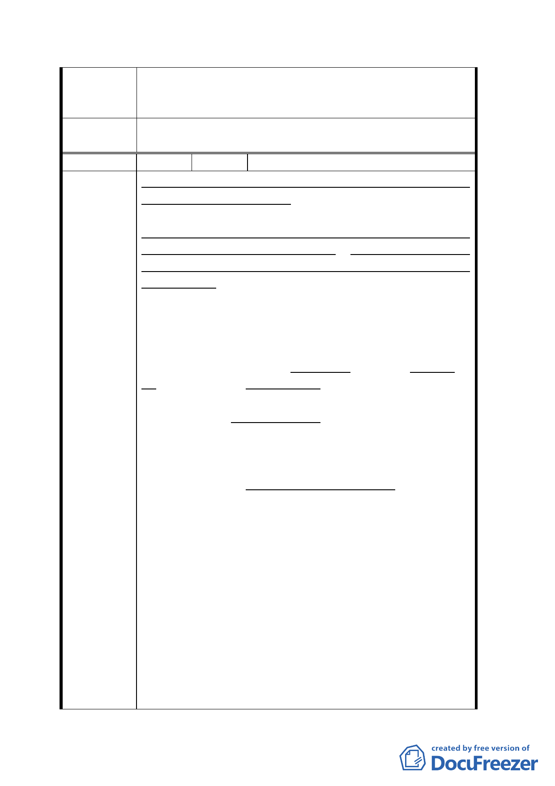

設，以利東西區平衡發展。
七、 至少考量合法建物住戶之權益，分割出貴陽
街部分土地。
委員會決
議
同決議一、二。
編 號 17 陳情人 陳 張 秋 月
変更台北市万華區中華路理教公所附近、第四種商
業區為廣場用地計画案、（以下簡称為廣場計画案）
之主要目標為求解決：
缼乏服務性公共設施及都市防災空間、為因應新型
消費文化来臨及都市空間轉變、本地區亟需大型公
共開放空間、以提升地區防災應變能力及服務性公
共設施水準之大問題，其絶非僅僅 10,230 平方公尺
之，小片廣場空間能達成。顕然其為紙上談兵，大
做文章之典型政治作秀，有聴其聲而永不見其影。
極為抽象毫無具体非常不実際。急需另尋更為理想
之其他方案，以替代此廣場計画案。
西門町附近已有西門町円環廣場、中山堂周辺廣
場、総統府前之超大型廣場延至東門，沿中華路両
側有各 23 公尺寛，一直延至小南門約 200 公尺長，
兼人行道之準廣場散歩大道。與日本東京之市中心
陳情理由
地區、或紐約高樓林立之曼哈坥商業中心區相比，
台北市西門町沿中華路地帯之廣場及空間，絶対有
過剰而無不及。
第一替代案： 建立西門社區活動中心
最好先参考在台北市松山區三民路口之民生社區活
動中心大樓，建立一所能迎合西門地區居民之實際
而迫切所需之西門社區活動中心大樓，以替代廣場
計画案。其當能大大提高西門地區居民之各種日常
活動。為慎重起見，可先経附近里長分発意見調査
表〔問巻〕給隣近居民，請求発表各居民之反應意
見及建議，以深入探査居民之眞眞需求，以供為適
宜計晝之具体指南。西門町地區至今，尚無具規模
之市立圖書舘，如民生社區三民分舘，也無社區活
動中心大樓。此提案遠比設立涵義廣泛而不具特定
目標之廣場計画案，更具有用途或使用目的至為明
確而具体，非常適合西門町地區，居民實際需要之
社區活動中心。其實際利用價値及實用性，絶対非
二一